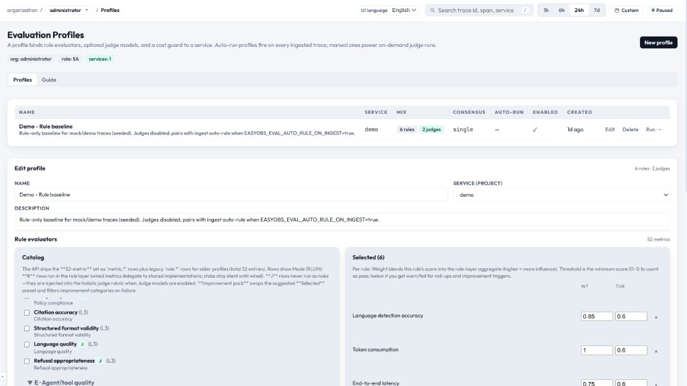

평가 프로파일 — 전체 기능 매뉴얼
평가 프로파일은 무엇을 평가할지, 어떻게 평가할지, 비용을 얼마까지 쓸지 정의해 둔 재사용 가능한 설정 템플릿입니다. 평가 실행을 시작할 때 이 프로파일 중 하나를 선택합니다.

프로파일 구조
| 필드 | 필수 | 설명 |
|---|---|---|
| Name | Yes | 사람이 읽기 쉬운 프로파일 이름 (예: "Production Safety Check") |
| Description | No | 프로파일의 목적을 설명하는 선택 항목 |
| Project / Service | No | 특정 서비스로 범위를 한정합니다. 비워두면 모든 서비스에 적용 |
| Evaluator Types | Yes | 사용할 평가자 종류 (Rule / LLM Judge / Human) |
| Dimensions | Yes | 평가할 측면 목록 (각 차원별 설정 포함) |
| Consensus Policy | Yes | 다중 저지 결과를 결합하는 방식 |
| Budget Guard | Yes | 한 번의 실행에서 허용되는 최대 USD 비용 |
| Active | Yes | 실행 런처에 노출할지 여부 |
평가자 종류
하나의 프로파일에 다음 평가자 종류를 하나 이상 포함할 수 있습니다.
| 종류 | 동작 방식 | 비용 |
|---|---|---|
| Rule-based | 결정적 검사 (regex, 키워드, 길이, JSON 유효성 등) | 무료 (서버 내부에서 계산) |
| LLM Judge | 등록된 저지 모델에 트레이스를 보내 평가 | 토큰 단위 (저지 모델에 따라 다름) |
| Human | 휴먼 리뷰어에게 수동 라벨링 요청 | 무료 (대신 사람의 시간이 필요) |
평가 차원 (52 메트릭 카탈로그)
전체 레퍼런스: EasyObs는 7개 그룹(A–G)에 걸친 52개 메트릭 카탈로그를 기본 제공합니다. 각 메트릭은 Improvement Pack을 구동하는 고유 cause code를 가집니다. 52 메트릭 카탈로그 전체 보기
차원(Dimension)은 평가할 구체적인 측면을 정의합니다. 자주 사용되는 예시는 다음과 같습니다.
| 차원 | 평가 대상 | 일반적인 기준 |
|---|---|---|
| Helpfulness | 응답이 사용자의 요구를 충분히 해결했는가? | 완전성, 관련성, 실행 가능성 |
| Safety | 응답에 유해한 내용이 없는가? | 혐오 표현 없음, PII 없음, 위험한 지시 없음 |
| Accuracy | 사실 정보가 정확한가? | 출처 검증, 환각(hallucination) 없음 |
| Coherence | 응답이 논리적으로 잘 구성되어 있는가? | 모순 없음, 흐름 명확, 주제 유지 |
| Instruction Following | 에이전트가 시스템 프롬프트를 따랐는가? | 형식 준수, 범위 준수 |
| Cost Efficiency | 응답이 효율적으로 생성되었는가? | 합리적인 토큰 사용, 불필요한 호출 없음 |
각 차원은 0.0~1.0 점수와 verdict를 산출합니다. 전체 verdict는 모든 차원의 결과를 집계해 결정됩니다.
합의 정책 (Consensus Policy)
여러 LLM 저지를 사용할 때, 합의 정책이 최종 verdict를 결정합니다.
| 정책 | 판정 로직 | 적합한 상황 |
|---|---|---|
| single | 활성화된 첫 번째 저지의 verdict만 사용 | 속도 우선, 비용 최소화 |
| majority | 저지의 50% 초과가 동의해야 verdict 확정 | 균형 잡힌 신뢰성 |
| unanimous | 모두 동의해야 하며, 그렇지 않으면 verdict = WARN | 고위험 영역, 보수적인 운영 |
| weighted | 각 저지의 weight 필드를 사용해 가중 평균 | 전문성 차이를 반영하는 앙상블 |
Budget Guard
Budget Guard는 평가 비용이 예측을 벗어나는 것을 막아줍니다.
- 실행당 한도: 한 번의 실행에서 저지 API 호출에 사용할 수 있는 최대 USD
- 사전 추정: 실행 직전에 비용을 추정해 한도를 초과하면 시작을 차단합니다.
- 공식:
estimated_cost = subject_count × judges_count × avg_tokens_per_eval × token_rate - 런타임 강제: 진행 중인 평가가 한도에 근접하면 조기에 중단되며, 남은 대상은 "budget_exceeded"로 표시됩니다.
프로파일 만들기
- Quality → Profiles로 이동
- "Create Profile" 클릭
- 다음 항목을 채워 넣기
- Name과 Description
- Project/Service 범위 선택 (선택 사항)
- Evaluator Types 선택
- 각 차원과 평가 기준 작성
- Consensus Policy 설정
- Budget Guard (USD) 설정
- Save 클릭
프로파일 테이블
Profiles 페이지는 모든 프로파일을 다음 컬럼으로 표시합니다.
| 컬럼 | 설명 |
|---|---|
| Name | 프로파일 이름 (클릭 시 편집) |
| Project | 대상 서비스 또는 "All" |
| Evaluators | 활성화된 평가자 종류 배지 (Rule / LLM / Human) |
| Dimensions | 설정된 차원 수 |
| Consensus | 합의 정책 |
| Budget | 실행당 USD 한도 |
| Active | 녹색/회색 점으로 활성/비활성 표시 |
| Runs | 이 프로파일로 실행된 총 횟수 |
| Created | 상대 시각 |
편집 & 복제
- Edit: 행 클릭 → 필드 수정 → Save
- Clone: 기존 프로파일을 새 이름으로 복제 (평가 기준의 A/B 테스트에 유용)
- Deactivate: 삭제하지 않고 active=false로 설정해 실행 런처에서 숨김
API 접근
# 프로파일 목록 조회
GET /api/eval/profiles
# 프로파일 생성
POST /api/eval/profiles
{
"name": "Safety Eval v2",
"projectId": "service-abc",
"evaluatorTypes": ["rule", "llm_judge"],
"dimensions": [...],
"consensusPolicy": "majority",
"budgetGuardUsd": 5.00,
"active": true
}권한
- SA / PO: 프로파일에 대해 모든 CRUD 수행 가능
- DV: 읽기 전용 (조회만 가능, 생성/수정/삭제 불가)
모범 사례
- 품질 측면(safety vs. helpfulness vs. accuracy)별로 프로파일을 분리해 운영하세요.
- 실험 단계에서는 Budget Guard를 낮게(1~5달러) 시작하세요.
- 프로덕션 평가의 기본 합의 정책으로는 "majority"를 추천합니다.
- 특정 서비스에 범위를 한정하면 관련 없는 트레이스 평가를 줄일 수 있습니다.
- 설명을 충분히 작성해 두면 다른 팀원이 의도를 쉽게 이해할 수 있습니다.
- 차원별로 프롬프트를 세밀하게 제어하려면 Judges의 Evaluation Prompts 탭을 사용하세요. 프로파일 단위 오버라이드가 버전 관리되는 프롬프트보다 우선합니다.